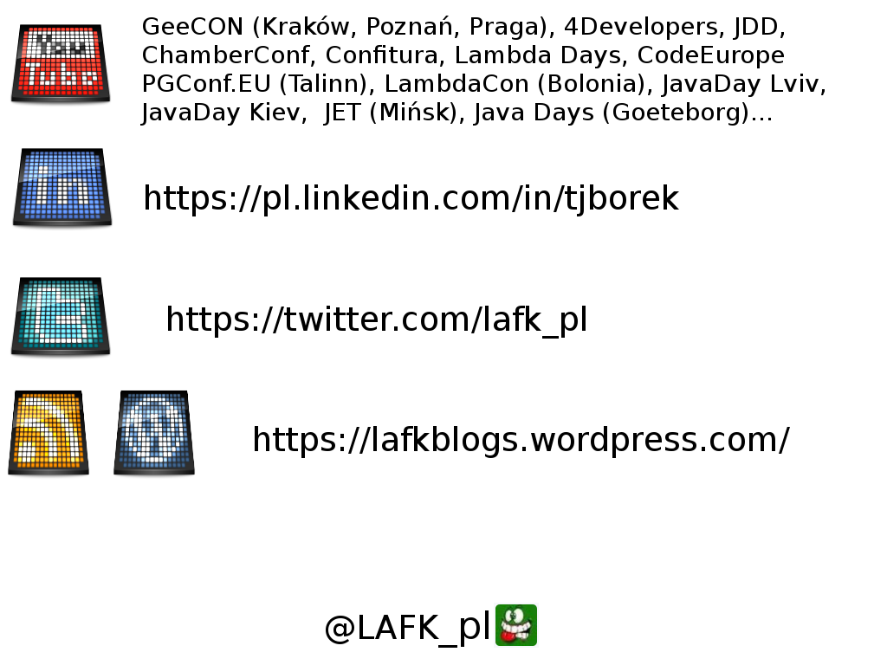

v=0000;eval$s=%q~d=%!^Lcf<LK8, _@7gj*LJ=c5nM)Tp1g0%Xv.,S[<>YoP
4ZojjV)O>qIH1/n[|2yE[>:ieC "%.#% :::##" 97N-A&Kj_K_><wS5rtWk@*a+Y5
yH?b[F^e7C/56j|pmRe+:)B "##% ::##########" O98(Zh)'Iof*nm.,$C5Nyt=
PPu01Avw^<IiQ=5$'D-y? "##: ###############" g6`YT+qLw9k^ch|K'),tc
6ygIL8xI#LNz3v}T=4W "# #. .####:#######" lL27FZ0ij)7TQCI)P7u
}RT5-iJbbG5P-DHB<. " ##### # :############" R,YvZ_rnv6ky-G+4U'
$*are@b4U351Q-ug5 " #######################" 00x8RR%`Om7VDp4M5
PFixrPvl&<p[]1IJ " ############:#### %#####" EGgDt8Lm#;bc4zS^
y]0`_PstfUxOC(q " .#############:##% .## ." /,}.YOIFj(k&q_V
zcaAi?]^lCVYp!; " %% .################. #. " ;s="v=%04o;ev"%
(;v=(v-($*+[45, ":####: :##############% : " ])[n=0].to_i;)%
360)+"al$s=%q#{ "%######. ######### " ;;"%c"%126+$s<<
126}";d.gsub!(/ "##########. #######% " |\s|".*"/,"");;
require"zlib"|| "########### :######. " ;d=d.unpack"C*"
d.map{|c|n=(n|| ":#########: .######: . " )*90+(c-2)%91};
e=["%x"%n].pack " :#######% :###### #: " &&"H*";e=Zlib::
Inflate.inflate( " ######% .####% :: " &&e).unpack("b*"
)[0];22.times{|y| " ####% %### " ;w=(Math.sqrt(1-(
(y*2.0-21)/22)**(; " .###: .#% " ;2))*23).floor;(w*
2-1).times{|x|u=(e+ " %## " )[y*z=360,z]*2;u=u[
90*x/w+v+90,90/w];s[( " #. " ;y*80)+120-w+x]=(""<<
32<<".:%#")[4*u.count(( " . " ;"0"))/u.size]}};;puts\
s+";_ The Qlobe#{" "*18+ ( "# :#######" ;"Copyright(C).Yusuke End\
oh, 2010")}";exit~;_ The Qlobe Copyright(C).Yusuke Endoh, 2010Software Craftsmanship
Become greybeards! Journey to galaxies far away! Master your tools!

Refurbishing the cubbyhole
a bed with sliding drawers
a locked wardrobe, 3m high
a set of book-shelves
a PC-adjusted desk with drawers and monitor stand
a little book-case
a sliding door with glass windows
a wooden wainscott
and of course a paint job was due
I learned
metalworking
cutting the bed frame
and soldering it
woodworking
from choosing to painting or polishing
painting
included mixing the paint
I learned
tooling: screwdriver, hammer, angler, ruler, flex-ruler
and power-tooling: sander, grinder, driller
I learned
know-how
wood durability and weight
soldering
handling sparks
handling tools that could overpower or harm me
tips&tricks
unlocking a simple lock,
good measuring practices,
marking places for drilling…
I learned
metal-/ wood-working
painting
tooling and power-tooling
know-how and tips&tricks
I was learning
a craft.
Other examples
a mini-drawer
a dishwasher door
a door-hiding wardrobe
a bathtub shelf
A music-score stand


The point?
crafts aren’t isolated
planning matters
volatile code is not a constraint
you can do things better
small improvements - automation
Practice begets experience

Masterpiece?
In the apprentice - journeyman - master cycle, mastery was confirmed by other masters upon journeyman’s producing the master toolset - his own masterpiece.
Blacksmith tools
All in order

Richard Stallman started with a compiler and then moved to Emacs.
Craftsman
a professional
a certain level of quality
a consistent level of quality
Today’s rules
Questions as we go
Break - one half-way through.
About Sages
Trainings and advisories for IT professionals
for companies in IT and outside, as long as it’s about software
Sages' mission statement
Company’s mission is to support the process of designing, creating and deploying software in corporations and public institutions, to minimize cost, time and risk associated with these endeavours.
http://www.sages.com.pl/sages
— Sages - o nas
— Sages - o nas
translation mine
About me, when not representing Sages


My jobs include
audits of: code, infra, components, design, systems
performance or security tests and audits
dealing with DBs, OS', networks or security
programming jobs
lectures, talks, workshops, trainings
Questions?

| appears rarely, so don’t wait for it |
Software Craftsmanship Kraków
Started as NoSQL summer
reading club
reading computer science papers
interdisciplinary
Scala, Java, Assembler, C#, .NET, devops…
Formula: reading club
choose a paper (voting)
read at home
during the meeting - discuss
paper proposals
Occasionally other formulas:
code retreat
legacy one
security dojo,
lean coffee,
lightning talks,
regular presentation,
etc.
Exemplary papers
Raising the bar
be better than yesterday
apprentice - journeyman - master
deepen the T
widen the T
The T or the I?
The T model
The Dreyfus model
Virtues
Well-crafted: pro, consistent level of quality
Steady improvements, not just responding to change
not like gamedev
Grow the community
again, not like gamedev, share with others
give back to community, train, speak, mentor
Customer is always right
except that pro should say no
In a nutshell
improve
master your tools
deepen and broaden your T
journey to mastery
take pride in your crafts
become a greybeard
Mastering something
Great designers design, that’s why they’re so great.
— Tomasz Borek on Archi-kata
In one way or another, all professionals practice. They do this because they care about doing the best job they possibly can. What is more, they practice on their own time because they realize that it is their responsibility – and not their employer’s- to keep their skills sharp. Practicing is what you do when you aren’t getting paid. You do it so that you will be paid, and paid well.
The Clean Coder
— Robert C. Martin
— Robert C. Martin
Computer programming, like any creative activity, demands constant study and practice. Vladimir Horowitz practiced the études of Chopin every night, after he performed a concert, to maintain his skills for the next performance. Tiger Woods drives a thousand balls on the driving range, every day. Pablo Picasso sketched a bull ten times before the eleventh bull was right.
https://programmingpraxis.com/contents/about/
— Programming Praxis
— Programming Praxis
Order
first master your language
then master your everyday tools
then choose new tools, languages, domains
Is this even needed?
we had devs and admins, but devops came
and ate build engineers too
we had BAs and DAs, but Data Scientists came
and got some programming thrown in
we had QAs and devs, but SDETs came
like automated testers but with programming
polyglot programmers?
polyglot persistence?
Throughout my whole career I never had to use scripting. Not even once.
— anon who programmed on Windows
You will not use multithreading in a true business software.
— anon from a conference
Mastering a language then
language spec
new features
document your findings (blog)
use your findings (code)
books have a progression as well

Kata
- Kata
kata, a Japanese word, meaning literally: "form" (型 or 形) - Wikipedia
A form of a (usually) solo training
A kata typically refers to fundamental movements in Japanese martial arts, but can refer to any basic form, routine, or pattern of behavior. Recognizable patterns of behavior and clear expectations make it easy to recognize abnormalities (problems) and also serve as a basis of improvement, setting and attaining higher standards.
In lean management, kata refers to two linked behaviors: improvement kata and coaching kata.
https://www.lean.org/lexicon/kata
— Lean lexicon
— Lean lexicon
Where to use?
Management - The Toyota Kata
Security - phishing game
Programming - Code Kata
Designing - Architectural Kata
Mastering specific area, tool, domain
Code Kata
Pragmatic Programmers, Emily Bache, Uncle Bob
Programming Praxis and other code sites
Robert Dunaway (JS, Angular, Bootstrap, Gulp)
Dalke has a collection of books and papers backing it up
http://www.dalkescientific.com/writings/diary/archive/2007/08/17/kata_and_practice.html
Archi-kata
Great designers design, that’s why they’re so great.
https://lafkblogs.wordpress.com/dojo/archi-kata/
— Tomasz Borek on Archi-kata
— Tomasz Borek on Archi-kata
Choose a problem
e-voting system
SMS campaign system
software for a travel agency chain
securing a SAAS
…
Time-frame
0,5h for an introduction and early problem Q&A
1h for designing
1h for presentations (count 10 minutes per team)
0,5 h for voting and wrap-up
Assumptions
only an hour for designing
you don’t have time to check
assumptions allow to go forward
what if they’re wrong
Findings
if you don’t draw with presenting in mind, you can’t win
nobody does priorities
even on conflicting reqs
group size and conceptual integrity
holding the reins from behind vs stifling others
plan B on broken assumptions or one bridge too far
brilliant idea gets people
Dojo
comes in several forms, uses several techniques
a challenge-based programming, where you compete with others
Tournament
two people sit down opposite each other and code same problem
time-based event
may be done as a relay-race
the usual form
Pair-programming
Known outside of dojo and recommended since XP, heck even appropriated by Agile. Great for mentoring or knowledge transfer.
Code reviews
As above.
Public code reviews may even be recorded.
Group ones with many reviewers or many learners
useful when recruiting
Craftsman exchange
how about exchanging an employee with another company?
unlike gamedev…
Code retreat
Legacy code retreat
Like a code retreat, but focuses on dealing with legacy code.
You don’t code from scratch, you have an app already.
SCKRK does them
Code Retreat is a fun exercise. You meet a bunch of strangers and friends alike, mix with them for a 45 minutes pair-programming and try to solve a simple (deceptively!) problem in a TDD manner.
GDCR meeting description
— Tomasz Borek
— Tomasz Borek
Code Retreat is a fun exercise. You meet a bunch of strangers and friends alike, mix with them for a 45 minutes pair-programming and try to solve a simple (deceptively!) problem in a TDD manner.
So, you code a lot and… you learn a lot. Different IDEs, different languages, different versions of Java, different testing frameworks, keyboard shortcuts, etc. etc.
---
Code Retreat is a fun exercise. You meet a bunch of strangers and friends alike, mix with them for a 45 minutes pair-programming and try to solve a simple (deceptively!) problem in a TDD manner.
So, you code a lot and… you learn a lot. Different IDEs, different languages, different versions of Java, different testing frameworks, keyboard shortcuts, etc. etc.
The exercise is famous enough to have its global edition, every November. Hence - this meeting.
Aside from the first (two?) session(s?) each session will have its unique constraint, to make things more interesting. :-)
GDCR meeting description
— Tomasz Borek
— Tomasz Borek
Global Day of Code Retreat
Toy project
Perhaps a most famous one…
I’m doing a (free) operating system (just a hobby, won’t be big and professional like gnu) for 386(486) AT clones. This has been brewing since April, and is starting to get ready. I’d like any feedback on things people like/dislike in minix, as my OS resembles it somewhat (same physical layout of the file-system (due to practical reasons) among other things).
25 August 1991 post to comp.os.minix
— Linus Torvalds
— Linus Torvalds
JAPH
- JAPH
Just Another Perl Hacker
Quine
Yusuke moved forward
Since 2010, where he did this quine, he made also others. See his YT channel. :-)
Online CV?
Mastering JS?
Vanilla.js: OOP, FP, prototyping, quirks
Wtf.js:
microframeworks?
your tooling
CSS3 and HTML5
Frameworks, if you need them
Angular, React, Ember, Vue
jQuery / Zepto
Zen Garden
Wow factors
D3.js
Vegas: https://vegas.jaysalvat.com/
Go and tests?
BDD and Go: Gomega and Ginkgo
testing/quick
rapid.check
gopter
Android?
Landen’s work, like toybox: https://landley.net/toybox/about.html
Something useful?
10minutemail?
log parser?
Fancy Quotes?
Ascinema or Byzanz-recorder?
SMOG station?
your own portfolio
Android?
Landen’s work, like toybox: https://landley.net/toybox/about.html
Teaching
If you can’t explain something to a first year student, then you haven’t really understood.
— Richard P. Feynman
Benefits
synthesis
revising what you know
for others
Synthesis
sketching
cheat sheets
Julia Evans, b0rk

Julia Evans, b0rk

Julia Evans, b0rk

Julia Evans, b0rk

Julia Evans, b0rk - zines
Jerry Hargrove, AWSGeek
Cheat sheets
A shell-level cheat sheet
Write a tutorial!
forces to reexamine what you think you know
for others you may find motivation you won’t for yourself
this will be seen!
which steps should one take - do you know?
Security
Bug hunting
Bug bounties
CTFs
War games
Deliberate practice
War Games, hacking marathons, hack-days
Reading about a topic, deep-diving into it
exercise sites like Programming Praxis or Euler
Steve Yegge has a few pieces on his blogs about practising programming.
including a critique of kata and replacing it with a deliberate practice
and series of practice drills
1
Practice Drill #1: Write your resume. List all your relevant skills, then note the ones that will still be needed in 100 years. Give yourself a 1-10 rating in each skill.
— Steve Yegge practice drill
2
Practice Drill #2: Make a list of programmers who you admire. Try to include some you work with, since you’ll be borrowing them for some drills. Make one or two notes about things they seem to do well — things you wish you were better at.
— Steve Yegge practice drill
3
Practice Drill #3: Go to Wikipedia’s entry for computer science, scroll down to the "Prominent pioneers in computer science" section, pick a person from the list, and read about them. Follow any links from there that you think look interesting.
— Steve Yegge practice drill
4
Practice Drill #4: Read through someone else’s code for 20 minutes. For this drill, alternate between reading great code and reading bad code; they’re both instructive. If you’re not sure of the difference, ask a programmer you respect to show you examples of each. Show the code you read to someone else, and see what they think of it.
— Steve Yegge practice drill
5
Practice Drill #5: Make a list of your 10 favorite programming tools: the ones you feel you use the most, the ones you almost couldn’t live without. Spend an hour reading the docs for one of the tools in your list, chosen at random. In that hour, try learn some new feature of the tool that you weren’t aware of, or figure out some new way to use the tool.
— Steve Yegge practice drill
6
Practice Drill #6: Pick something you’re good at that has nothing to do with programming. Think about how the professionals or great masters of that discipline do their practice. What can you learn from them that you can apply to programming?
— Steve Yegge practice drill
7
Practice Drill #7: Get a pile of resumes and a group of reviewers together in a room for an hour. Make sure each resume is looked at by at least 3 reviewers, who write their initials and a score (1-3). Discuss any resumes that had a wide discrepancy in scoring.
— Steve Yegge practice drill
8
Practice Drill #8: Listen in on a technical phone screen. Write up your feedback afterwards, cast your vote, and then talk about the screen with the screener to see if you both reached the same conclusions.
— Steve Yegge practice drill
9
Practice Drill #9: Conduct a technical interview with a candidate who’s an expert in some field you don’t know much about. Ask them to explain it to you from the ground up, assuming no prior knowledge of that field. Try hard to follow what they’re saying, and ask questions as necessary.
— Steve Yegge practice drill
10
Practice Drill #10: Get yourself invited to someone else’s technical interview. Listen and learn. Try to solve the interview questions in your head while the candidate works on them.
— Steve Yegge practice drill
11
Practice Drill #11: Find a buddy for trading practice questions. Ask each other programming questions, alternating weeks. Spend 10 or 15 minutes working on the problem, and 10 or 15 minutes discussing it (finished or not.)
— Steve Yegge practice drill
13
Practice Drill #12: When you hear any interview coding question that you haven’t solved yourself, go back to your desk and mail the question to yourself as a reminder. Solve it sometime that week, using your favorite programming language.
— Steve Yegge practice drill
Coding sites
This blog publishes new programming exercises weekly, at least, so that savvy programmers can maintain their skills by working the exercises and thinking outside their normal skill set, whatever that is.
https://programmingpraxis.com/contents/about/
— Programming Praxis
— Programming Praxis
Example sites
Coding Bat
Code Wars
Coding Game
LeetCode
HackerRank
VimGolf
Wargames in OverTheWire or WeChall
How about rolling your own?
Your own toy project
A recruitment help
A refresher prior to your own interview
Practice makes perfect
right?
Wrong!
Perfect practice makes perfect.
a violin story
a tennis story
Psychological Review had a paper on it:
The Role of Deliberate Practice in the Acquisition of Expert Performance
To maximize gains from long-term practice, individuals must avoid exhaustion and must limit practice to an amount from which they can completely recover on a daily or weekly basis.
Ralf Th. Krampe
— K. Anders Ericsson
— K. Anders Ericsson
A number of training studies in real life have compared the efficiency of practice durations ranging from 1-8 hr per day. These studies show essentially no benefit from durations exceeding 4 hr per day and reduced benefits from practice exceeding 2 hr (Welford, 1968; Woodworth & Schlosberg, 1954).
Ralf Th. Krampe
— K. Anders Ericsson
— K. Anders Ericsson
Many studies of the acquisition of typing skill (Baddeley & Longman, 1978; Dvorak et al.. 1936) and other perceptual-motor skills (Henshaw& Holman, 1930) indicate that the effective duration of deliberate practice may be closer to 1hr per day.
Ralf Th. Krampe
— K. Anders Ericsson
— K. Anders Ericsson
How does the average guitarist practice? In the years before I started getting serious about lessons, I played a lot — 6 to 8 hours a day for about 5 years. I learned a lot of songs, all by memorization, and I had to play them constantly to keep them in memory, so at least 2 hours of every day was wasted just running through the pieces. Through brute-force effort I eventually started to sound like I knew what I was doing. Fooled myself and most of the people around me, anyway.
on guitar-playing
— Steve Yegge
— Steve Yegge
I felt I could muddle through almost anything, but it was clear that I became progressively sloppier as the music became more technically challenging. And there were some things I just couldn’t play.
on guitar-playing
— Steve Yegge
— Steve Yegge
The problem was that I had no idea how to practice correctly. The saying "practice makes perfect" is inaccurate, as any music teacher will happily tell you. Perfect practice makes perfect. I’d been practicing sloppily, and had become very good at being sloppy.
on guitar-playing
— Steve Yegge
— Steve Yegge
Questions?
Greybyeards
Tooling?
Taxi on a Sunday
a COBOL story
The curse
Majority of software developers are fated to become managers
Classical technical path
Junior - Programmer - Senior
Architect - Principal Architect
Box, System, Solution
Or a team-leader, one leg in a grave already!
Other paths
Scrum / Agile
Consultants
Managers of course
???
Number of good reasons to be a manager

Reasons boil down to
people can be fascinating
decision power, career, money - so-called fate or reality
Majority of software developers are fated to become managers
Classical technical path?
back-end, front-end, full-stack? programmer, administrator, devops? manual tester, QA, SDET
Technical Mastery
Programming (general, scripting, web) Devops (infra, scripts, built tools, OSes) DBs (SQL, non-SQL) Low-level programming, mechanical sympathy FP, FRP (infinite streams), Big Data Distributed systems (networks, clusters, HA) Multithreading (which paradigm?) UA/UX/UI IoT, hardware programming (drivers, firmware) Android / iOS / native mobile apps
Become a greybeard then!
Technical and domain mastery
Step out of comfort zone
Don’t go for „sad manager”
Increase skills, amass experience
Greybeard, because it takes time
Is there plan minimum?Plan minimum: growing a beard
DO spend time on programming chase after wisdom deepen your skills things you haven’t yet done share experience with others
DON’T throw-away programming cause "career" get lulled into thinking years == experience
Learn your (many) tools
IDE VCS: Git, Mercurial, Fossil Testing libraries or frameworks Build tools Multithreading paradigms / libraries OS and it's distros Other languages
Learn your (many) tools
This fixes several problems
Hammer and nail problem
SODD problem
Magical frameworks problem
Framework was built to solve problem
author’s problem, not yours
I know Spring / Git / whatever
I know… how to useMaster many tools then!
Wield your tools like a pro
Business casual
Toolbox expansion
How it works (understand, not just use)
No hammer and nail
No SODD
Not piecing lego together
No magic, just frameworks
Questions?
Movement Criticism
primadonnas that the client pays for
guild mentalities, a step back to medieval era
journeyman? really? who’s "a master"?
I’m no plumber
coder - programmer - engineer - developer - …
kata, dojo, ninja, why the whole martial arts fix-up?
turned into business
Summarizing then?
SCKRK is awesome
manifesto calls for professionalism
you have it? then raise the bar
your call, not your employers, so YOUR skills are admirable
it’s about self-improvement, a journey to mastery
your masterpiece? your T?
PRACTICE - in many shapes, forms or directions
Galaxies
Flash galaxy
C, Java, Perl, Python, Go, JS, Lisp, Scheme…
dev, ops, devops,
front, back, full-stack
dev, qa, SDET
security
Books
iconic or just often associated with Software Craftsmanship